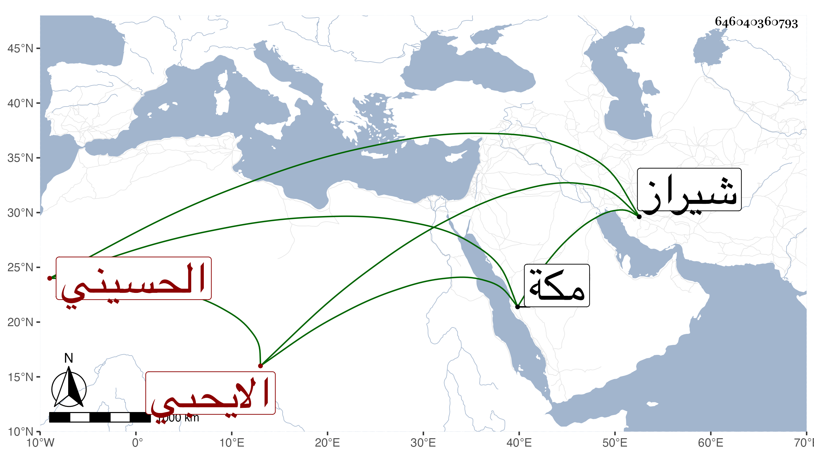

0902Sakhawi.DawLamic.ITO20230111-ara1.EIS1600.646040360793
Biography ID: 646040360793
102
حبيبة الله ابنة الصفي عبد الرحمن بن محمد بن عبد الله أم الفضل ابنة السيد الحسيني الايحبي أخت نور الدين أحمد والمعين محمد وحليمة وأم عبيد الله ابن العلاء محمد الماضين . ولدت في عاشر ربيع الأول سنة سبع عشرة وثمانمائة بشيراز ونشأت في كنف أبيها وأجاز لها جماعة وتزوجها ابن عمها العلاء محمد بن السيد عفيف الدين واستولدها أولادا تأخر منهم عبيد الله وقطنت معه وبعده مكة دهرا على طريقة جميلة وسلوك لطريقة أبيها وعمها في عدم تعاطي ما يجئ من بجيله ومثابرتها على وظائف العبادة ، وقد تزوج عليها ابن عمها بأخرة سرا فلما علمت بادر لفراق الجديدة خوفا من سخطها وعاشت بعده دهرا ، وكانت زائدة الحب لي على وجه الإعتقاد وكنت مغتبطا بذلك وكان لكثيرين فيها اعتقاد ولها أتباع من أقربائها وغيرهم تحسن اليهم وكادت أن تفتقر فأدركتها المنية في ثالث شوال سنة خمس وتسعين بعد أخيها السيد أحمد بأشهر منها ، وكان وجعها الحرقة تعللت بها مدة ودفنت عند سلفها بالمعلاه رحمها الله وإيانا .
